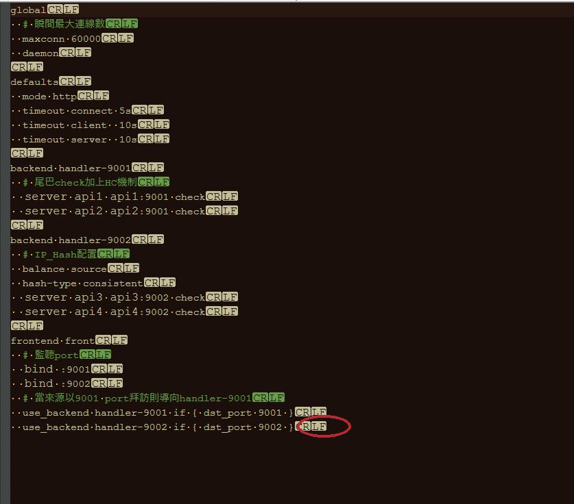

在處理nginx LB HC到一半的時候發現，Nginx免費版本只有支援被動類型的健康檢查，這個必須在來源請求後才能知道後端服務是否正常並進而調整是否要把請求往後送；如果要做到主動檢查，則必須使用nginx plus付費版本才行，所以找了Haproxy這套來處理
Nginx跟Haproxy差異
Nginx
- 定位為Server
- 反向代理性能略遜Haproxy，但還是很厲害
- 多種plugin module插件支持，功能擴充性高
- master-workers多Process，每個Process單線程，多核CPU能充分利用
- 進階功能都須仰賴付費版本
Haproxy
- 定位為Load balancer
- 多線程，可設置多Process，但效益不大
- 不能作為Server用
- LB效能比Nginx好
- 免費仔可以蹭到很多功能
支持一般LB跟ip_hash配置設定
1
2
3
4
5
6
7
8
9
10
11
12
13
14
15
16
17
18
19
20
21
22
23
24
25
26
27
28
29
30
| global
# 瞬間最大連線數
maxconn 60000
daemon
defaults
mode http
timeout connect 5s
timeout client 10s
timeout server 10s
backend handler-9001
# 末端check加上HC機制
server api1 api1:9001 check
server api2 api2:9001 check
backend handler-9002
# IP_Hash配置
balance source
hash-type consistent
server api3 api3:9002 check
server api4 api4:9002 check
frontend front
# 監聽port
bind :9001
bind :9002
# 當來源以9001 port拜訪則導向handler-9001
use_backend handler-9001 if { dst_port 9001 }
use_backend handler-9002 if { dst_port 9002 }
|
ps: 要留意config最後必須是LF結尾

參考資料
範例程式